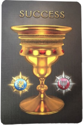
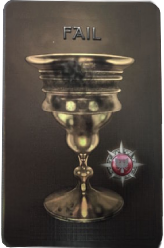

Avalon is a game of deception and logical deductions, where players go on Quests to figure out each other’s loyalty. Players are either loyal servants of Arthur fighting for the Good or minions of Mordred supporting the Evil. Each character possesses a unique advantage to make the game more interesting. For example, Merlin knows all minions of Mordred. To find out more about each character, click on the Characters tab.
| How Evil Wins | How Good Wins |
|---|---|
| 3/5 quests fail | 3/5 quests pass |
| Guess who Merlin is correctly if Good wins | |
| Quests are disapproved 5 times |
Each player is dealt a character card, which may not be revealed till the end of the game. Someone will read out a script so the correct information about each player is known. For example: Everybody close your eyes. Minions of Mordred stick out your thumb, Merlin open your eyes to see the Evil players. If you go to the Narration tab, it will read the script for you.
The quest giver will propose a team to go on a quest. Players are allowed to discuss at anytime who they want/ don’t want on a quest. After the quest giver chooses their desired team, everyone will then either approve or disapprove of the selected team. If majority disapproves the quest, then the person to the quest giver's left will become the new quest giver. Keep in mind that if players disapprove the suggested team 5 times in a row, then Evil automatically wins the game.
If majority(a tie doesn’t count as majority) approves the quest giver’s team, then the selected players will go on the quest. They will each be handed a success and a fail card. If you are a good character, then you can only play the success card. But as an evil character, you can put either card down. The cards will then be shuffled and if all of them are success, the quest passes (Good wins this round). If there is one or more fail cards, then the quest fails (Evil wins this round).
 If Good wins 3/5 quests, evil has a chance to win the game if they can guess who Merlin is.
| Players | 5 | 6 | 7 | 8 | 9 | 10 |
|---|---|---|---|---|---|---|
| Good | 3 | 4 | 4 | 5 | 6 | 6 |
| Evil | 2 | 2 | 3 | 3 | 3 | 4 |
| Players | 5 | 6 | 7 | 8 | 9 | 10 |
|---|---|---|---|---|---|---|
| Q1 | 2 | 2 | 2 | 3 | 3 | 3 |
| Q2 | 3 | 3 | 3 | 4 | 4 | 4 |
| Q3 | 2 | 4 | 3 | 4 | 4 | 4 |
| Q4 | 3 | 3 | (4)Requires 2 fail cards for this quest to fail | (5)Requires 2 fail cards for this quest to fail | (5)Requires 2 fail cards for this quest to fail | (5)Requires 2 fail cards for this quest to fail |
| Q5 | 3 | 4 | 4 | 5 | 5 | 5 |